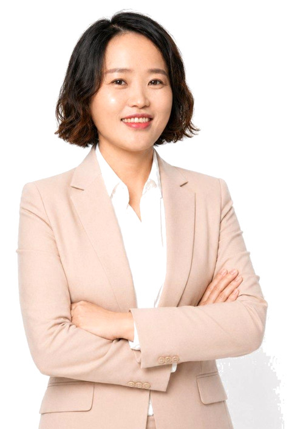

스스로를 길치·기계치·디지털치라 부르던 사람이 AI 강사가 되었습니다.
그래서 처음 AI 앞에서 막막한 마음을 누구보다 잘 압니다. 2018년부터 2026년까지 직업상담사로 일하며 사람마다 다른 출발선과 필요를 살펴 왔고, 3년간 신기술 AI 직업훈련교육을 직접 기획·운영했습니다.
지금은 그 경험을 바탕으로 한 사람 한 사람의 수준과 업무에 맞춘 AI 교육을 합니다. 목표는 하나, AI를 쉽게 배우고 나답게 활용하도록 돕는 것입니다.
하면 된다,
될 때까지 한다.
어려운 AI는 쉽게, 일상과 업무의 성장을 함께 돕는 맞춤형 AI 가이드 이서정입니다.

스스로를 길치·기계치·디지털치라 부르던 사람이 AI 강사가 되었습니다.
그래서 처음 AI 앞에서 막막한 마음을 누구보다 잘 압니다. 2018년부터 2026년까지 직업상담사로 일하며 사람마다 다른 출발선과 필요를 살펴 왔고, 3년간 신기술 AI 직업훈련교육을 직접 기획·운영했습니다.
지금은 그 경험을 바탕으로 한 사람 한 사람의 수준과 업무에 맞춘 AI 교육을 합니다. 목표는 하나, AI를 쉽게 배우고 나답게 활용하도록 돕는 것입니다.
학력서울사이버대학교 상담심리학 · 사회복지학
단독 특강부터 여러 회차 과정까지, 대상과 목적에 맞춰 구성합니다.
챗GPT·제미나이·클로드로 문서 작성, 요약, 기획안 초안 등 반복 업무 줄이기
홍보용 카드뉴스, 이미지·영상·음악을 AI로 기획부터 완성까지
기관·기업·공공기관 종사자, 구직자, 시니어 등 수준별 맞춤 설계